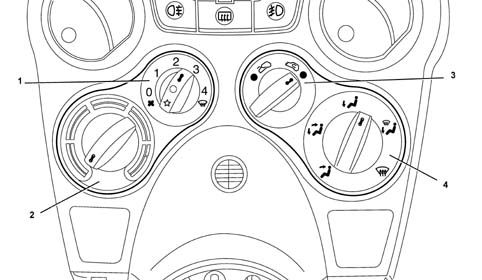
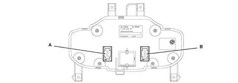
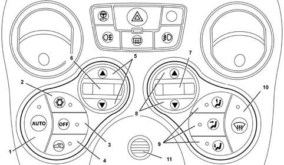

Introduction - CLIMATE CONTROL - MISCELLANEOUS
- Path
- Descriptions > 50 AUXILIARY UNITS > 5010 CLIMATE CONTROL - MISCELLANEOUS > Introduction - CLIMATE CONTROL - MISCELLANEOUS
- Kind
- system description
- Applies to
- all engines; all production periods
- Interactive page
- https://sloeber94.github.io/elrnDB-fPnd/en/#/2753480
Applies to: all engines; all production periods
This vehicle is equipped with two passenger compartment climate control systems:
- manual climate control
- automatic single-zone climate control
The climate control system allows the properties of air taken into the passenger compartment (temperature, humidity) to be changed.
The difference between both system types, i.e. manual and automatic, lies solely in the way the system is managed:
- manual climate control: the user adjusts certain air temperature, distribution and flow settings. These remain the same until they are re-adjusted by the user
- automatic climate control system: the user can set parameters and instruct the system to manage them automatically. The user retains the ability to manage the system, if required.
Applies to: all engines; all production periods
Manual climate control system
The figure below depicts the manual climate control system

1 Fan speed selection and compressor activation knob with compressor status indication led 2 Air mixer control knob 3 Recirculation knob 4 Passenger compartment air distribution selection knob
Applies to: all engines; all production periods
Operating strategy
The manual air condition allows the user to manage passenger compartment air temperature and intake by mean of the various control knobs.
The following parameters/functions can be modified manually:
- Temperature
- Distribution pattern with 5 settings
- Fan speed.
- Compressor enabled
- Demist/defrost function
- Recirculation
Air mixing, distribution and circulation commands are directed from the knobs to the climate control system casing via flexible cables (bowden cables).
The compressor activation knob is built so that, with the compressor enabled, the user cannot zero the fan speed (turn the knob to zero) to prevent the evaporator freezing.
Outdoor temperatur, measured by the external temperature sensor built into the left door mirror, limits compressor operation in certain ways:
- if the outside temperature < 1° C the compressor is disabled
- if the outside temperature > 1° C the compressor is enabled
The enablement supplied by the demisting sensor constitutes another limitation. This sensor detects ice formation on the evaparator and thus disables the compressor to prevent the evaporator from freezing.
Applies to: all engines; all production periods
Automatic climate control system
This system may be managed automatically by an electronic control unit known as the 'Climate Control System Node' (NCL) that is responsible for maintaining climate control system settings entered by the user unchanged.
The NCL is connected to the B-CAN network of the vehicle electrical system.
The NCL is built into the climate control system panel installed in the middle of the instrument facia.
The following figure depicts the back of the control unit showing connections to the electrical system and then the connector pin out.

Applies to: all engines; all production periods
Automatic climate control system
Connector A brown 12 pin
PIN. | OPERATION |
|---|---|
01 | +30 battery |
02 | Signal + key |
03 | Earth |
04 | nc |
05 | Earth |
06 | Frost sensor |
07 | Fan feedback |
08 | Fan control |
09 | CAN B (High) |
10 | Can B (Low) |
11. | FLOOR temperature sensor |
12. | VENT temperature sensor |
Blue 12 pin connector B
PIN. | OPERATION |
|---|---|
01 | MIXER actuator feedback |
02 | |
03 | nc |
04 | nc |
05 | RECIRCULATION control (+) |
06 | RECIRCULATION control (-) |
07 | DISTRIBUTION actuator feedback |
08 | COMPRESSOR activation/deactivation |
09 | MIXER control (+) |
10 | MIXER control (-) |
11. | DISTRIBUTION control (+) |
12. | DISTRIBUTION control (-) |
Applies to: all engines; all production periods
Operating strategy
The following figure depicts the front of the control panel:

1,- AUTOmatic mode key 2,- Compressor activation key 3, - Control unit OFF key 4, - Recirculation key 5, - Temperature regulation keys 6, - Temperature setting display 7, - Air flow setting display 8, - Air flow adjustment keys 9, - Air distribution selection keys 10, - MAX DEF key 11,- Passenger compartment air temperature sensor
Applies to: all engines; all production periods
Operating strategy
The same manual system parameters/functions may be altered manually:
- Temperature
- Distribution pattern to 5 settings
- Fan speed.
- Compressor enabled
- Demist/defrost function
- Recirculation
Manual selections always take precedence over automatic selections and are stored until the user deliberately cancels the command, allowing the automatic device to take control over the relevant function.
The manual setting of a function does not adversely affect the control of other functions set to automatic, in particular, the control of the temperature is always automatic when the system is running.
All the buttons have dual functions (ON/OFF) including the recirculation
The function is enabled after the button is pressed.
The pressing of a button is only recognized after the previous button has been released.
Applies to: all engines; all production periods
General remarks on operating status display.
Climate control system operating status is shown through LEDS and DISPLAYS.
- RECIRCULATION function: key with car outline and amber led indicates recirculation function on when lit
- Compresor Enablement Function led: key with snowflake symbol and amber led indicaete Compressor enabled status when lit.
- - AUTO led: key with AUTO wording and amber led, indicates that all the functions are managed by the control system when lit. The AUTO led goes out if there is at least one manual Flow rate, Distribution, Compressor or Recirculation command.
- MAX DEF function LED: key with amber led, indicates MAX DEF function on, when lit.
- HEATED REAR WINDOW LED: YELLOW, indicates heated rear window on.
- DISPLAY: NEGATIVE TRANSFLECTIVE type displays passenger compartment fan air flow, temperature settings (in C or F) by means of bars
- Function led OFF: key with OFF wording and amber colour, indicates control off status when lit.
- Distribution status led: amber, indicates passenger compartment air distribution status.
Applies to: all engines; all production periods
Comes on after car stops.
When the system is switched on the various parameters are checked manually or automatically depending on the selections made by the user before it was switched off.
All the manual interventions made before the engine was switched off are stored in the memory until the next time the engine is started up.
This also applies to the OFF function; if it was switched off before the engine was switched off then the system will still be switched OFF.
If at the previous key off the Max Def function was on, then at the key on the condition memorized before the Max Def condition is implemented.
Applies to: all engines; all production periods
Temperature control
Selecting a temperature setting
The passenger compartment temperature is set by the control unit each time the battery is connected at 22 ° C. The user can modify the temperature setting by means of the appropriate keys.
Changes take place in 0.5 ºC steps
The temperature ranges from 16 to 32 ºC; below 16. ° C the value set becomes 'LO' whilst above 32. ° C the value set becomes 'HI',
When the control unit is switched off, the temperature setting, shown on the display, is stored in the memory and renewed at the next key on.
Winter starting transition
In order not to create problems that could disturb the user, such as cold air jets and/or front window misting, the system must activate a 'TRANSITORY START-UP PERIOD' management procedure when the control unit is activated under certain temperature conditions.
The control unit ensures that the following conditions occur simultaneously:
- engine coolant temperature below -4° C
- outside temperature below 19° C
When these conditions persist, the control unit implements the 'winter starting transitory' procedure and sets:
- air flow rate to the first bar
- distribution to DEF
- mixing to AUTO conditions
During winter start-up transitory conditions, it is possible to automatically engage the compressor to dehumidify the air.
The winter transitory procedure is turned off if outdoor temperature exceeds 21 ° C the or coolant temperature raches 50 ° C.
All manual functions stored at the last key off are restored at the end of the winter transitory period.
LO condition
Maximum air cooling is achieved by setting the temperature below 16° C.
This user request involves the following actions:
- Mixer: the air mixer flap must be set to MAX COOLING
- Distribution: the distribution flap is positioned (by default) on VENT and the led comes on (visible to the user)
- Ventilation: the air flow is displayed as 10 bars (by default)
- Recirculation: remains as set by the user with all the set recirculation rules.
- Compressor: enabled (led on if previously off).
Under LO conditions, all manual settings are accepted: a user request must be given piority over automatic management conditions operated by the control system in LO status.
Max cooling status management function is interrupted by one of the following functions that is given priority over max cooling management (LO)
- +KEY OFF status management function;
- Management function in OFF status;
- Management function in MAX DEF status.
HI condition
Maximum air heating, is reached by setting a temperature above 32° C.
This user request involves the following actions:
- Mixer: the air mixer flap must be set to MAX HEATING
- Distribution: the distribution flap is positioned (by default) to FLOOR with XX% leakage to DEF and the led comes on (visible to user)
- Ventilation: air flow (default) is displayed as 10 bars (with limitations due to winter transitory procedure)
- Recirculation: remains as set by the user with all the set recirculation rules
- Compressor: remains as set by the user
Under HI conditions, all manual settings are accepted: a user request must be given priority over automatic conditions operated by the control system in HI status.
Max cooling management is interrupted due to one of the following functions being given priority over max cooling status (HI);
- +KEY OFF status management function;
- OFF status management function;
- MAX DEF status management function.
AUTO function
When the AUTO key is pressed and the led comes on, control of the following functions is restored to the automatic device:
- Air distribution
- Fan speed
- Compressor
- Recirculation
The following actions take place as a consequence:
- AUTO leld comes on
- compressor led comes on (i.e. ignition request to engine management control unit)
Specific situations:
- the AUTO led goes off when at least one manual distribitution, flow, recirculation and compressor setting is peformed.
when a manuals setting is made to distribution/flow/compressor, recirculation, the system automatically returns to AUTO if the AUTO key is pressed
Applies to: all engines; all production periods
Checking fan speed and display.
Air flow can be adjusted manually to 12 levels. These are displayed on a 12 bar display.
If no manual operations are performed, fan speed is controlled continuously by the automatic device and indicated on the display by activation of the relevant number of bars for the flow rate.
If the user operates the ventilation control manually, the system leaves AUTO status.
Adjust the relevant keys to increase or decrease fan speped.
When one of the two keys (up/down) is held down for longer than 0.8 seconds, the repeat function is activated, which increases air flow by one step every 0.4 seconds.
With air flow set to AUTO or while in HI, LO and MAXDEF modes, the flow is limited to one bar (minimum flow) if engine rpm is lower than 200 RPM or battery voltage is lower than 10.5 Volt. It is still possible to operate the fan control manually during this limitation.
Flow is no longer limited when engine rpm exceeds 250 rpm and battery voltage is higher than 11.5 Volts.
If the compressor is disabled, the ventilation control can be adjusted manually until the display shows 0 bars, i.e. flow rate zero.
If the compressor is enabled and the engine is started up, the manual ventilation cannot go below 1 bar (minimum flow rate) shown on the display, because, with the compressor enabled, there must be a minimum air flow rate to prevent the evaporator from freezing.
Applies to: all engines; all production periods
Air distribution control
There are 5 air distribution positions (VENT, BILEVEL, HEAT , FLOOR and DEF.
In addition to the distribution control the system also displays the selection by lighting up the LEDs in the control buttons.
Setting distribution
One of the 5 positions can be selected manually by operating the appropriate buttons in accordance with the following combination strategy.
Manual distribution is managed in three groups:
- Main distribution: DEF (windscreen), VENT (front), FLOOR (footwells)
- Comination distribution patterns: BI_LEVEL, FLOOR_DEF
- Prohibited distribution patterns: all OFF, DEF-VENT, DEF-VENT-FLOOR
With the main distribution activated (one LED on) the following takes place when the same button is pressed:
- the distribution remains unchanged;
- the system switches to manual operation
When a key is pressed that generates the prohibited 'all OFF' distribution pattern or when 2 or 3 keys are pressed simultaneously, the distribution is not altered at the moment the key is pressed but remains unchanged.
Applies to: all engines; all production periods
Compressor management
Compressor management
The compresor activation key is dual type and fitted with led lights. Press the key to enable the compressor control and activation of the led.
The compressor key led indicates whether the compressor activation request has been forwarded to the Engine Management Node. If the led comes on, the request has been forwarded.
From now on, provided external temperature requirements are met, the system generates the amount of cooling required to control the climate inside the passenger compartment and the evaporator dehumidifies the air.
These functional states are maintained even after successive KEYS OFF/ON.
Outdoor temperature also limits compressor operation in certain ways:
- if Text <= 3° C the compressor is disabled
- if Text = 5° C the compressor is enabled
- if demising sensor enablement is present
- If temperature is between 3 and 5° C at KEY ON, the compressor is enabled.
Temperature setting flasher strategy
When the user disables the compressor, the following takes place:
- the key led goes off
- the AUTO led goes off (if it was on previously)
- the control unit assesses whether the system is able to reach the set temperature with the current outside temperature. If so, the system operates normally and is able to provide the required service even without the compressor activated. If not, the systemis not able to supply the required service and indicates this by causing the temperature setting to flash. - If the compressor is not enabled, the temperature flashing cycle begins again at the next key on/disablement of OFF.
Applies to: all engines; all production periods
Recirculation management
Recirculation key
The recirculation key employs a dual strategy.
This strategy allows three possible operating modes to be set:
- Automataic recirculation (managed in accordance with certain specific rules defined below and activated by the AUTO key)
- Recirculation bypassed to closed (passenger compartment air ( RFC)
- Recirculation bypassed to open (outdoor air) (RFA)
The following are used to display the various recirculation modes:
- key (with led) with AUTO key (if led is on, recirculation is automatic)
- key (with led) showing car outline (if led is on, recirculation is BYPASSED TO CLOSED)
When the control unit is turned off, recirculation is bypassed to closed;
Automatic recirculation
Recirculation is managed automatically (flap open/closed) taking into account the following rules, shown in order of decreasing priority):
- air exchange rule: after 25 minutes of closed recirculation, the system opens the system for one minute to allow air inside the passenger compartment to be exchanged. Once this time has elapsed, the system returns to the conditions prior to opening.
- temporary dynamic rule: when the user disables the compressor manually or when the compressor is turned off automatically due to low outdoor temperature, the control unit opens recirculation to prevent the inside of the passenger compartment windows from misting and and thus worsening the visibility.
- transitory heat regulation rule to promote passenger compartment heating: during passenger compartment cooling, the system opens or closes recirculation on the basis of outdoor temperature. It always takes in air from the coldest point to speed up passenger compartment cooling.
Manual recirculation
Recirculation bypassed to closed: this type of manual operation is indicated by the led on the recirculation key coming on and indicates recirculation flap closure.
Recirculation bypassed to open: this type of manual operation is indicated by the led on the recirculation key going off and indicates recirculation flap opening.
In this mode, the following rules are applied:
- air exchange rule
- temporary dynamic rule
Applies to: all engines; all production periods
MAX DEF
The MAX Def function (MAXimum DEFrost) is a set procedure activated by the relevant key.
This procedure involves activation of the following operations:
- activation of led in Def air distribution position
- storing of operational status and displays prior to the MAX DEF command
- deactivation of led/messages relating to AUTO and recirculation functions
- activation of DEF distribution, Compressor enablement, Recirculation open and heated rear window leds
- indication of high temperature (HI) on display
- indication of ventilation on display
If the MAX DEF function is activated after the winter start-up transitory, the following occurs:
- air flow at 80% of maximum.
- MAX DEF timer set to three minutes
If the MAX DEF function is activated during the winter start-up transitory period, the following occur:
- flow remains as transitory flow, if coolant temperature is less than 35° C;
- flow is 80% of maximum flow if coolant temperature reaches/exceeds 35° C;
- the system waits for coolant temperature to reach/exceed 50° C to begin the 3 minute MAX DEF timer.
- distribution flap set to Def
- mixer flaps set to High Temperature
- recirculation flap bypassed to open
- compressor function enabled
- rear window demister function enabled
During operation in MAX DEF mode, the following operations are possible without exiting from the procedure:
- alter the air flow rate (increase/decrease) at will
- deactivate the heated rear windscreen
The MAX DEF function is supended when any one of the climate control unit keys/commands is operated (recirculation/compressor enablement, auto, off, Max. Def, temperature and distribution)causing the system to return to the status prior to Max Def, except for the command associated with the pressed key, which must be implemented.
Management of the MAX DEF procedure takes priority over the LO procedure (max cooling) and HI procedure (max. heating). If these are operating, operation is suspended if the MAX DEF procedure is activated.
Applies to: all engines; all production periods
Control unit/system deactivation
The following actions take place when the OFF key is pressed:
- current status is stored
- air recirculation bypassed to closed and led comes on
- OFF led comes on and all other icons go off
- compressor deactivated
- fan deactivated
- mixer set to max cooling
- distribution set to Vent
When Off, the recirculation key can still be operated in dual (ON/OFF) mode without the automatic device.
When OFF, the system comes back on when any key is pressed (except recirculation and Temperature) and all the operating modes previously stored by the system are restored.
The air flow increase rocker switch restores all conditions prior to deactivation and simultaneously implements a manual flow request.
If the system is turned back on with a Distribution key, only the main distribution requested is implemented.
With the control unit OFF, it comes back on next time OFF is pressed. All conditions prior to deactivation are restored.